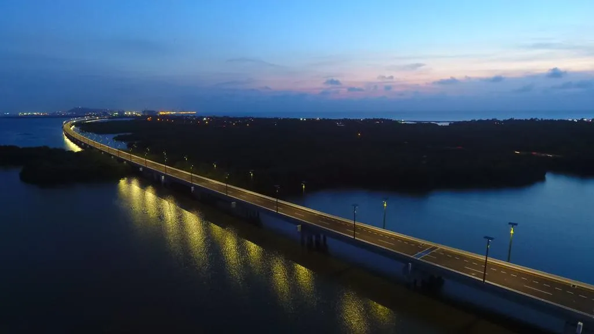
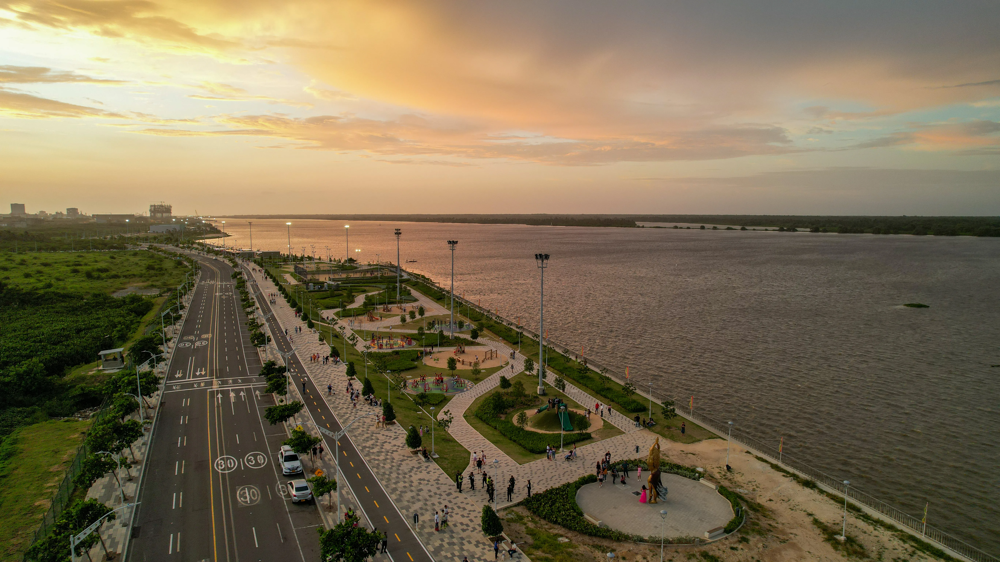

Menú
Mapa Interactivo
Rutas Sugeridas
Conexiones
Visita Cartagena
Sitios de interés
Visita Barranquilla
Ruta Turística
MAPA
RUTAS
CONEXIONES
Visita Cartagena
Turismo Oficial Bolívar
Sitios de interés
Conoce la Ruta Costera
Visita Barranquilla
Experiencias en el Atlántico

Viaducto el Gran Manglar

Gran Malecón
Volcán del Totumo